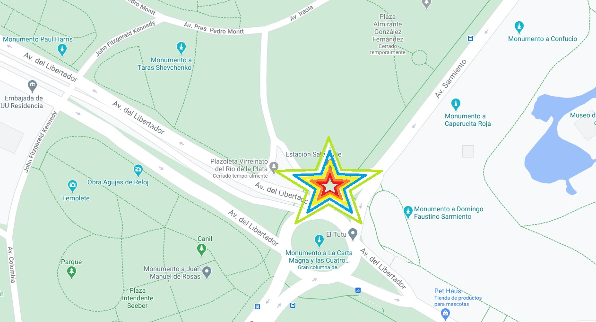

Salidas urbanas.
Todos los jueves a las 17Hs nos juntamos en la esquina de Av. Libertador y Av. Sarmiento. Salimos a las 17:10Hs para recorrer la city porteña y finalizar en Puerto Madero para recibir el atardecer con algo fresquito.
Todos los sabados tenemos entrenamiento en la escuela de RUB en Puerto Madero.
Podes encontrarnos des las 08:00hs hasta las 14:00hs detras del hotel Faena, frente al parque Micaela Bastidas.
Los domingos son los dias donde organizamos salidas con logistica previa.
Nuestros destinos mas comunes son:
Principiantes: Vicente Lopez/ San Isidro
Intermedios: Tigre/Villa la Ñata/Matwicht/Parana de las Palmas.
Informacion necesaria para las salidas de RUB
Para todas nuestras salidas tenemos una lista de normas a cumplir para asegurar un espacio y ambiente de respeto mutuo entre ciclistas y trafico en general.
1- Uso de casco obligatorio.
2- Uso de tapa bocas obligatorio. Solamente en los momentos donde nos detengamos a descanzar.
3- Aceptamos cualquier tipo de bicicleta siempre y cuando esta se encuentre en optimas condiciones de uso.
4- Kit de parchado o camara de repuesto. Una de las dos opciones si o si. Durante los trayectos de nuestras salidas esta la posibilidad de pinchar la rueda y hay que estar preparado para esto.
5- Uso de iluminacion para salidas nocturnas o diurnas con baja vivivilidad. Obligatorio.
6- Nuestras salidas se mueven bajo un estricto protocolo de logistica previa por lo cual solicitamos a los participantes a ayudarnos mutuamente velando por la seguridad de todos y de uno mismo. Como tambien no pasando a los coordinadores
y respetando las señales dadas por los mismos.
7- Los eventos estan sujetos a los cambios climatologicos. Si llueve o hay altas probabilidades de lluvia (60% o mas) se supenden.
8- ¨Declaro bajo juramento: I) Que no padezco afecciones físicas adquiridas y/o congénitas que me impidan o imposibiliten en modo alguno practicar en forma activa cualquier clase de deporte. II) No tener trastornos en mi salud o condiciones
de vida, que me impidan o condicionen en la participación activa de los entrenamientos de RUB. III) Que antes de comenzar los entrenamientos de RUB me he realizado un chequeo médico obligatorio exigido por el entrenador del equipo, encontrándome
en condiciones psicofísicas óptimas para la participación activa en las clases, entrenamientos y/o eventos deportivos, asumiendo de este modo, todos los riesgos, consecuencias y daños derivados de mi participación en todas las actividades
y/o entrenamientos de RUB. IV) Que he sido informado de las modalidades y planes de entrenamiento, así como de los lugares y horarios en que el mismo se efectúa, asumiendo en forma plena los riesgos y consecuencias de que de los mismos
se pudieran derivar (caídas, contacto con otros participantes, consecuencias del clima, tránsito vehicular, condiciones del camino y/o cualquier otra clase de riesgo). Tomo conocimiento y acepto voluntariamente, que el entrenador del equipo
NO toma a su cargo ni se responsabiliza por ningún tipo de indemnización, reclamo, costo, daño y/o perjuicio reclamado, incluyendo y no limitado a , daños por accidentes, daños materiales, físicos o psíquicos o morales, lucro cesante,
causados a mi persona o a mis derechohambientes , con motivo y en ocasión de los entrenamientos y/o actividades de que participare¨ Los menores de 18 años deberán ser autorizados por sus padres, tutor/es y/o quién ejerza sobre ellos la
patria potestad.
Los esperamos!!!!!!!!!

Recorridos Urbanos Buenos Aires @ 2021
Email: rubbsas@gmail.com
IG: @rubbsas
Cel: (11)2823-1343